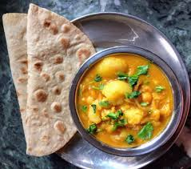
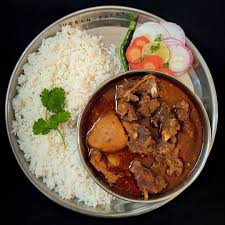
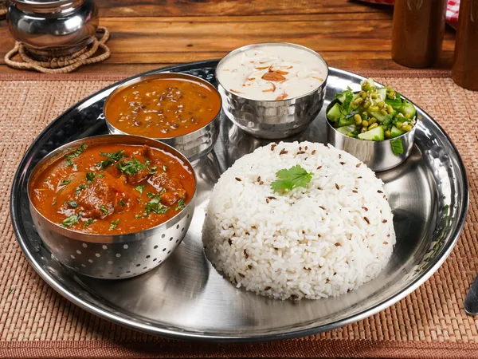

Here are List of Breakfast that we offer here:
Roti-Tarkari

Embark on a culinary journey with the authentic flavors of Roti-Tarkari, a classic Nepali dish that harmonizes simplicity
with rich taste. Soft, unleavened rotis, crafted from whole wheat flour, serve as the perfect vessel for an array of vibrant
vegetable curries (Tarkari). Each bite is a delightful amalgamation of textures and tastes, where the wholesome roti complements
the aromatic and savory Tarkari. Whether enjoyed as a comforting homely meal or a satisfying street food experience, Roti-Tarkari
captures the essence of Nepal's culinary heritage.
Bread

Experience the comforting simplicity of Nepali bread, a versatile staple that transcends cultures and occasions. Soft and
pillowy, Nepali bread is expertly crafted to complement a variety of meals. Whether served as a side to savory curries or as
the foundation for a hearty sandwich, this bread is a beloved accompaniment to diverse culinary delights. Enjoy the subtle
sweetness and tender texture that make Nepali bread a cherished part of everyday meals and festive feasts alike.
Mutton-Thali

Elevate your dining experience with Nepali Mutton Rice, a delectable dish that showcases the robust flavors
of succulent mutton and fragrant rice. Meticulously prepared with a medley of spices, this culinary masterpiece
brings together the tender goodness of mutton and the aromatic allure of perfectly cooked rice. Each bite is a
journey through the heart of Nepali gastronomy, where tradition meets innovation. Whether shared during special
occasions or relished as a comforting meal, Nepali Mutton Rice is a testament to the country's culinary heritage.
Chicken-Thali

Embark on a culinary journey with the rich and flavorful Nepali Chicken Rice. This traditional dish combines
succulent pieces of tender chicken with aromatic rice, expertly infused with an array of spices that dance
on your taste buds. The marriage of tender poultry and fragrant grains creates a harmonious symphony of textures
and flavors. Whether enjoyed as a festive feast or a comforting family meal, Nepali Chicken Rice is a celebration
of Nepali culinary prowess, inviting you to experience the warmth and spice of the Himalayan kitchen.
Veg-Thali

Discover the vibrant and wholesome goodness of Nepali Veg Rice, a vegetarian delight that captures the essence of Nepal's
diverse culinary landscape. Overflowing with colorful vegetables and fragrant rice, this dish is a celebration of freshness
and flavor. Expertly seasoned with a blend of spices, Nepali Veg Rice offers a symphony of tastes that cater to the discerning
palate. Whether enjoyed as a standalone meal or as a delightful accompaniment to other Nepali dishes, this veggie-infused rice
dish is a testament to the country's commitment to wholesome and delicious vegetarian cuisine.